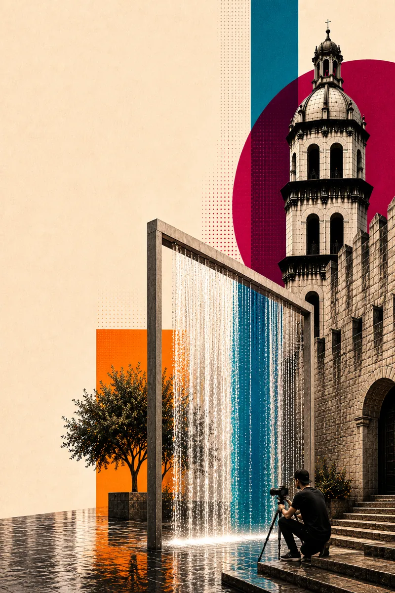

Arquitectura que aparece, transforma y se va.
Festival internacional de arquitectura efímera, creación contemporánea y ciudadanía en el casco histórico de Córdoba.
Tu marca, un artista, un patio.
En septiembre de 2027, un grupo seleccionado de empresas crea, con un artista o con su propio equipo, una instalación en un espacio del festival. 15 plazas: candidaturas hasta el 28 de febrero de 2027.
7 espacios
San Basilio, Capilla Mudéjar, Bellas Artes, Casa de las Tazas, Palacio de los Angulo, Palacio de Viana y C3A.
Artista o in-house
Tu artista, uno que te proponemos o tu propio equipo.
30 días
Abierta al público todo septiembre, con premio a la mejor instalación.
Un mes. Cinco obras. Patios, una capilla y un palacio abiertos a quien quisiera entrar. Después, nada. Solo la ciudad, mirada de otra manera.
Cinco obras, cinco lugares.
Sombra, agua y verde: la primera edición respondió al calor con los recursos de siempre de la ciudad.
Ver las obras
Aquí nacen las obras.
Diez días de taller internacional en el C3A, dirigido por Nina Chaltiel con estudiantes de la Architectural Association de Londres. Prototipos por la mañana, charlas al caer la tarde y la ciudad como aula.
10
días de taller
15
ponentes invitados
AA
School of Architecture, Londres
En prensa
Toda la prensaEl Patio de las Tazas acogerá este jueves la apertura del festival Efímera Córdoba 2026 con música y gastronomía
Diario Córdoba · Araceli R. ArjonaArte efímero para denunciar desde Córdoba el cambio climático
El Día de Córdoba · Ángela AlbaUn recorrido por las instalaciones del Festival Efímera Córdoba 2026, en fotos
El Día de Córdoba · Fotos: Luis Navarro
La primera edición fue la semilla. La segunda ya se está dibujando.
Lab del 20 al 31 de agosto e instalaciones durante todo septiembre de 2027. Del resto, te enteras antes que nadie.


 Partner técnico · tejido 3D
Partner técnico · tejido 3D